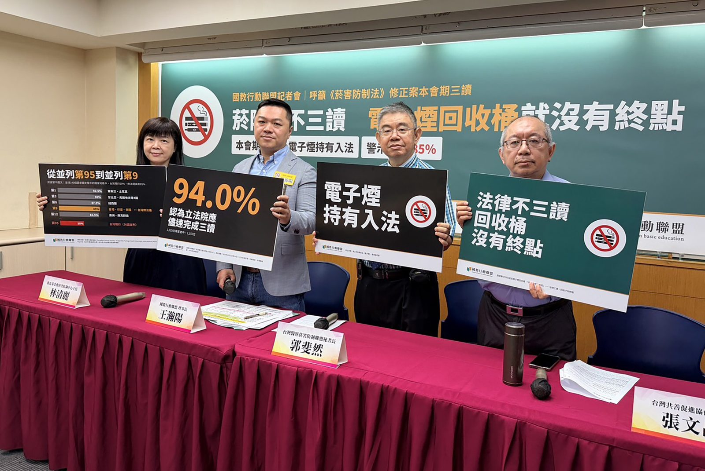
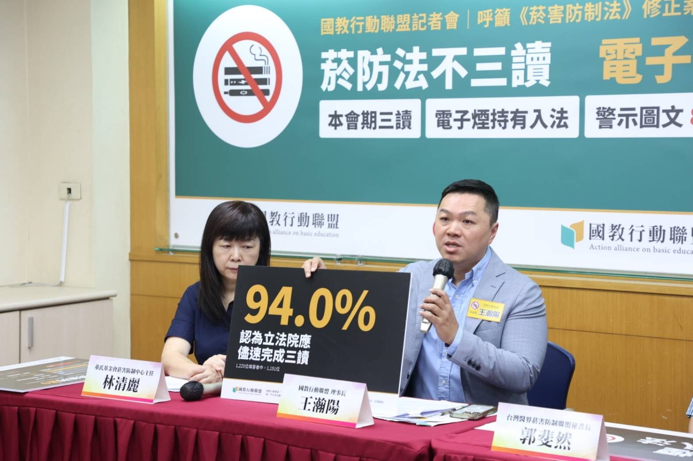
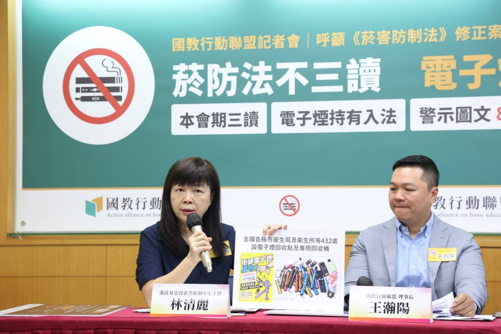

菸防法不三讀，電子煙回收桶就沒有終點
滿月回收633公斤 國教盟呼籲本會期儘速三讀、持有入法、警示85%

國民健康署9月8日起在全台設置電子煙專用回收桶。國健署副署長林莉茹10月15日對媒體說明，滿月累計回收電子煙633公斤，回收點共432處，以每支50公克換算約1萬2,660支。但國健署9月5日新聞稿已載明，回收措施「將配合修法進度，預計提供至新法施行後1個月緩衝期屆滿」。國教行動聯盟（簡稱「國教盟」）10月19日召開記者會強烈呼籲：法律不三讀，回收桶就沒有終點，法律晚一天三讀，推估四萬名使用電子煙的青少年，就多一天暴露在摻有依托咪酯煙彈的風險之中，立法院應於本會期完成《菸害防制法》修正案三讀。
回收桶是權宜，不是制度：修法完成，回收才有終點

國教盟理事長王瀚陽指出，回收數量不能直接推論電子煙實際流通規模，更不代表問題已經解決。現行菸防法已禁止電子煙的製造、輸入、販賣與使用，「持有」要等修法才納入處罰。草案規劃，修正條文施行前已非供他人使用而持有者，施行後1個月內查獲不處罰鍰、物品仍沒入；緩衝期屆滿後，持有電子煙處新臺幣3萬元以上10萬元以下罰鍰。法律遲遲不三讀，就無法對持有者開罰。
王瀚陽進一步指出，法律不三讀，非法供應端的刑責與網路業者的管理義務也同步延宕；依協商通過的條文，菸盒85%警示圖文要在公布一年後才施行，越晚三讀，孩子就越晚看到新的菸盒。國健署114年青少年吸菸行為調查顯示，國中生電子煙使用率2.1%、高中職5.1%，推估至少有4萬名青少年使用電子煙；行政院公告自6月27日起列為第一級毒品的依托咪酯，已在警方查獲的電子煙煙彈中出現。
王瀚陽提醒，電子煙不等於毒品，但電子煙裝置可能被用來作為毒品載具。他說：「家長再怎麼提醒、學校再怎麼查察，如果非法電子煙仍能輕易透過網路與地下管道取得，防制工作就不可能只靠教育現場完成。」他主張，新法施行後的緩衝期（草案規劃），國健署應同步公告回收終止日並辦理宣導，讓回收有終點。
電子煙絕非無害：甜味包裝下，是成癮與健康風險
台灣醫界菸害防制聯盟秘書長、臺大醫院家庭醫學部主治醫師郭斐然指出，世界衛生組織提醒，電子煙的氣溶膠通常含有尼古丁及其他有毒物質，部分具致癌性，並可能增加心臟及肺部疾病風險；尼古丁高度成癮，青少年接觸可能對腦部發育造成長期不良影響。他提醒，電子煙常偽裝成USB、筆等日常用品，多為甜味、水果味，家長不容易從菸味察覺。
郭斐然指出，青少年使用菸品受家庭、同儕與社群行銷等環境驅動。他表示，「法規的制定對社會環境有絕對的影響」。他也提醒，國民健康署戒菸服務已包括電子煙戒除，免費戒菸專線0800-636363。
85%是在協商桌上被挑戰過、仍維持的版本
台灣共善促進協會秘書長張文昌指出，WHO菸草控制框架公約第11條實施準則指出，較大的警示圖文更能傳達健康風險、提高戒菸動機，且效果隨面積增加而提高；WHO 2026年世界無菸日主題「Unmasking the appeal」，也在揭露產業如何以口味、包裝與行銷吸引新世代。
立法院公報記載，7月30日協商曾有人提議把85%降為60%，主席裁示「這條維持委員會審查結果」。依加拿大癌症協會2025年報告的排名表，台灣現行50%與另35個國家地區並列第95；85%則相當於香港、印度、泰國並列第9的水準。張文昌強調：「85%不是單純的數字競賽，而是政府願不願意讓健康警示充分發揮作用。」
看懂菸商伎倆，孩子才拒絕得了

董氏基金會菸害防制中心主任林清麗表示，法律與執法能阻斷非法供應，但單純告訴學生「吸菸有害、不要吸菸」仍不夠，需要讓孩子看清菸草公司行銷伎倆。董氏基金會、臺北市政府衛生局和義工李紫嫣，搭配WHO最新倡議製作宣導影片《拒絕所有菸品，從看懂菸商伎倆開始》（https://www.youtube.com/watch?v=726wgP9m2rw）揭露加味菸品、魅惑行銷與欺騙包裝是菸商設計年輕人的3大伎倆，鼓勵學校在班會、週會運用。她強調：「法律阻斷非法供應，教育建立辨識能力，兩者缺一不可。」
協商只留下兩條保留送院會
立法院社會福利及衛生環境委員會7月15日審查，照行政院提案及委員修正動議，把菸品容器警示圖文面積由現行50%提高到不得低於85%，也照行政院提案通過禁止持有電子煙的條文。7月30日朝野黨團協商，通過非法供應電子煙的刑罰與網路業者的管理義務，協商結論載明「其餘均照審查會審查結果通過」，只有第7條（外銷菸品健康風險評估）與第10條（菸品添加物）兩條保留送院會處理。截至10月19日，立法院已公布的院會議事日程未排入本案。
1,225位填答者中，1,151位認為應儘速完成三讀
國教行動聯盟8月21日至24日對菸盒警示圖文辦理「意見徵集」，共1,239位填答者。在回答此題的1,225位填答者中，1,151位（94.0%）認為立法院應儘速完成三讀，39位（3.2%）認為不需要通過。閱讀修法資訊前，1,231位填答者中有1,155位（93.8%）支持85%；閱讀後，1,227位填答者中有1,170位（95.4%）支持（兩題分母不同）。本意見徵集為自願填答、非隨機抽樣，主要經LINE群組與朋友轉傳取得，不能推論到所有民眾。
留言欄有位填答者說：「請朝野為了國人健康盡快完成立法」；另一位填答者說：「這是立委當然的責任，不是拜託。」也有填答者說：「要保護青少年，不要讓他們受誘惑去吸菸。」反方意見同樣存在，一位填答者說：「此法案治標不治本」。
國教行動聯盟提出三項訴求
一、立法院應於本會期儘速完成《菸害防制法》修正案二讀、三讀，推進電子煙非法供應防制、持有與使用管理、網路平台責任，以及85%菸盒警示圖文等規範。
二、立法院應依程序儘速處理保留條文。對第7條與第10條尚待處理的內容，應充分審議、清楚交代，兼顧公共健康及制度完整性，避免整體立法持續延宕。
三、衛福部與教育部應落實青少年防制教育，提供學校及家庭更充足的辨識與拒菸教育資源。
王瀚陽理事長強調：「電子煙不能只靠回收，菸害防制不能只靠宣導，更不能讓家長與老師獨自承擔所有責任。源頭要管、違法要罰、健康風險要看得見，孩子才能真正受到保護。」國教行動聯盟呼籲，兒少健康沒有黨派之分，立法院應於本會期儘速完成後續審議與三讀，讓電子煙防制、健康警示及相關配套真正落實，為下一代建立更安全、健康的成長環境。
同日政府回應
衛福部長石崇良 10 月 19 日受訪表示，《菸害防制法》修法已完成立法院衛環委員會審查及黨團協商，盼立法院儘速通過，以杜絕電子煙及網路販售菸品亂象；並強調擴大查緝、增加地方執法人力，都必須先有法源依據，否則「無濟於事」。（太報，記者游騰傑，2026-10-19）
記者素材包
數字出處、時間軸與參考資料（APA 第 7 版）：下載記者素材包（Word）。記者會現場照片見下方相簿。
記者會現場照片


新聞聯絡人
- 國教行動聯盟理事長 王瀚陽 電話 0983-097-165
本頁為 2026 年 10 月 19 日國教盟記者會新聞稿全文官網存查版，內文逐字照登、未經改寫。媒體採訪請聯繫上方新聞聯絡人。